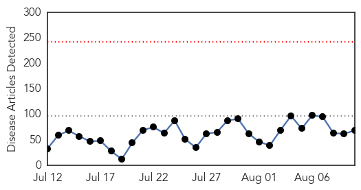
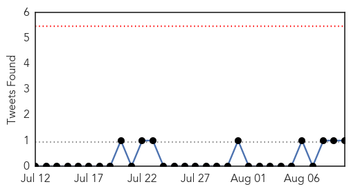
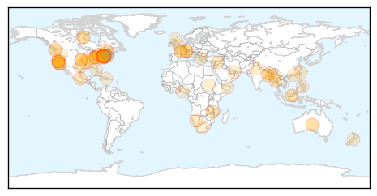
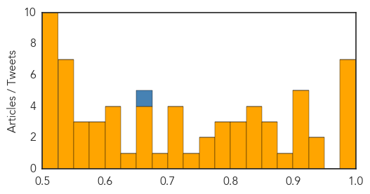
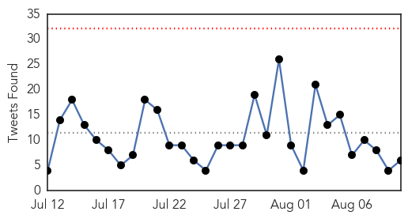
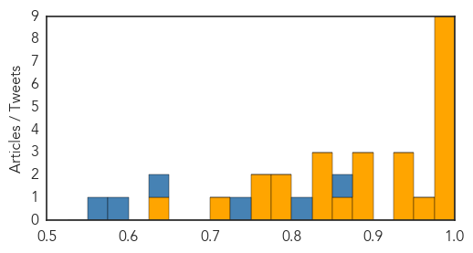

Unknown
30-Day Web Trend
0 alerts, 0 warnings

30-Day Twitter Trend
0 alerts, 0 warnings

Article Locations

Article Confidences
Top Articles:
- 0.995
- More deaths reported in New York Legionnaires' outbreak
- 0.989
- Meningococcal alert: child in hospital
- 0.987
- Rockland Officials Watching Local Legionnaires' Disease...
- 0.985
- Mayor De Blasio Says NYC Has Successfully Contained Legionnaires' Disease Outbreak
- 0.979
- 8th person dies in New York Legionnaires’ disease outbreak
- 0.979
- Health officials hope the worst case of Legionnaires' outbreak in NYC is over
- 0.977
- LEGIONNAIRE’S SCARE NYC outbreak grows to 10 dead, 100 diagnosed
- 0.940
- Russian doll disease is a virus inside a parasite inside a fly
- 0.936
- 3 Rocklanders affected by Legionnaires'; Chromalloy reopens
- 0.917
- Chicago Tribune
- 0.917
- Chicago Tribune
- 0.917
- Chicago Tribune
- 0.917
- Chicago Tribune
- 0.913
- New York governor taking action after deadly illness
- 0.882
- Intestinal parasite outbreak linked to imported produce
- 0.873
- Malawi urged not to panic over outbreak of maize disease
- 0.864
- Legionnaires’ disease outbreak appears to be slowing down, NYC health officials say
- 0.857
- CDC warns of rabies surge in Bali, Indonesia
- 0.849
- Rapid Response on Ohio's Church Potluck Botulism Outbreak
- 0.842
- Legionella Disease outbreak cases found around 100 people
- 0.838
- Death Toll Rises To 12 In South Bronx « CBS New York
- 0.833
- Deaths due to Legionnaires Disease Results in Widespread Order to Inspect Cooling Towers
- 0.818
- Ten dead in record New York Legionnaires’ outbreak
- 0.816
- NYC Legionnaires' outbreak: Cooling towers explained
- 0.811
- Newport Hospital Leads State in Opening First Lyme Disease Center
- 0.798
- Cyclospora Outbreak Announced in Canada Too
- 0.798
- California child diagnosed with plague after trip to Yosemite
- 0.780
- NYC Mayor Wants New Laws To Stem Legionnaires’ As Death Toll Hits 12
- 0.775
- California child diagnosed with plague after trip to Yosemite
- 0.765
- California public health department investigates plague case
- 0.748
- Zambia National Broadcasting Corporation
- 0.722
- Ministry of Health signals shift in spending priorities
- 0.715
- 79 new diarrhoea patients admitted to Kolkata hospital
- 0.711
- Rocky Mountain spotted fever rare in Indiana
- 0.709
- Medical Crowdsourcing Saves Child’s Life from Deadly E. Coli Infection
- 0.677
- Turkish security forces reel from wave of attacks
- 0.675
- Health ministry enacts special fund for patients
- 0.675
- Four More Public Health Departments Awarded National Accreditation by the Public Health Accreditation Board
- 0.666
- blame consumers
- 0.661
- Legionnaires' Disease Outbreak in South Bronx Leaves 7 dead, says Legal-Bay Lawsuit Settlement Funding
- 0.635
- Sonora / Tuolumne News, Sports, & Weather, Angels Camp, Twain Harte, Jamestown
- 0.615
- Study Claims Hand Washing Practices Low Among Healthcare Staff In India
- 0.605
- Child Camping in Sierras Contracts Plague
- 0.604
- EU approves €2.4 billion to tackle migrant crisis
- 0.604
- Woman drowns in Dubai after father blocks rescue to save her from ‘dishonour’
- 0.593
- Science Media Centre Blog Archive New Zealanders uncertain about water fluoridation
- 0.582
- Taipei Water Department makes compensation vow
- 0.581
- 19th annual rabies bait drop begins Aug. 11
- 0.575
- Myanmar: UNICEF calls for $9.2 million USD for children affected by Myanmar floods, as supplies arrive
- 0.562
- Global Medical Crowdsourcing Helped Save Girl From Deadly E. Coli Strain That Killed Brother
Showing top 50 articles...
Top Tweets:
- 0.670
- Riyadh has a MERS outbreak. Saudis report +4 cases today. That makes 19 in the past 8 days. Most today don't have links to known cases. 1/2
Ebola
30-Day Web Trend
1 alerts, 0 warnings

30-Day Twitter Trend
0 alerts, 0 warnings

Article Locations


Article Confidences
Top Articles:
- 1.000
- Sierra Leone's chief Ebola doctor contracts the virus
- 0.999
- Ebola vaccines testing starts in Liberia in partnership between Liberian and US governments
- 0.997
- Proposed Ebola biobank would strengthen African science
- 0.997
- Ebola Survivors Face Depression, Pain And Chronic Medical Conditions, Experts Say
- 0.997
- So far so good as Sierra Leone nears ZERO Ebola infections a day
- 0.996
- Man evaluated for Ebola at Bellevue Hospital
- 0.983
- Survivors suffer joint pains and possible blindness
- 0.981
- Red Alert: Plague outbreak kills 40 in Madagascar out of 119 cases
- 0.980
- Are we prepared for the next global epidemic? The public doesn’t think so - By Jim Yong Kim
- 0.959
- Single dose Ebola vaccine is safe, effective in monkeys against outbreak strain
- 0.946
- China vows to continue support after Ebola outbreak ends
- 0.945
- Taking Caring To Another Level
- 0.939
- Epidemics: Courting controversy
- 0.897
- Page not found
- 0.895
- Downing Street honour for nurse from Whalley Range who volunteered to fight Ebola outbreak
- 0.891
- China pledges continued support for Ebola-hit African nations
- 0.860
- Expanding and Accelerating Response to Calls for Ambulances and Burial Teams for Sierra Leone’s Ebola Outbreak
- 0.837
- China Vows Giving Support to Ebola-suffering Nations in Africa
- 0.833
- China pledges continued support for Ebola-hit Africa nations
- 0.829
- ‘The World Came Late’
- 0.786
- China pledges continued support for Ebola-hit Africa nations
- 0.783
- China’s foreign minister comes with the support of three West African Countries Hit by Ebola
- 0.765
- Case Study: Oxfam Ebola Response, Monrovia The Gaddeh Family – nearly killed by an unreal disease - Liberia
- 0.755
- Chinese FM lauds China-Liberia cooperation in fighting Ebola - Xinhua
- 0.709
- Chinese FM lauds China-Liberia cooperation in fighting Ebola
- 0.640
- China rushes to aid post-Ebola recovery in West Africa
Top Tweets:
- 0.854
- Découvrez aujourd'hui la chanson de Cisse Daouda le 3ème prix de notre concours Africa Stop Ebola: "Stop Ebola... http://t.co/4CavhhYGJL
- 0.814
- Health Department: Person Returning From Guinea Does Not Have Ebola - CBS Local http://t.co/uikvJAMljM ebola EVD
- 0.731
- Sierra Leone celebrates lifting of ban on public gatherings due to Ebola - The Guardian http://t.co/nXZEQe78rj ebola EVD
- 0.635
- Ebola lesson 2: When national capacities are overwhelmed the world must move immediately and decisively to combat emerging health threats.
- 0.576
- China foreign minister pledges continued support to Ebola-hit African nations - U.S. News & World Report http://t.co/8PZcpPGxaB ebola EVD
- 0.553
- Strategy Used for Allergy Medication May Inhibit Ebola - MD Magazine http://t.co/o8NMk24hqc ebola EVD